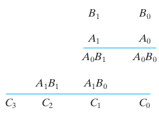
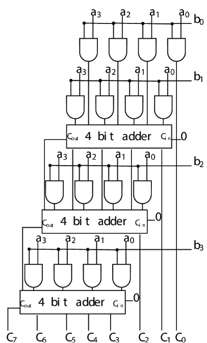
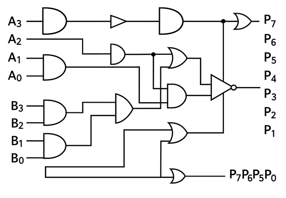
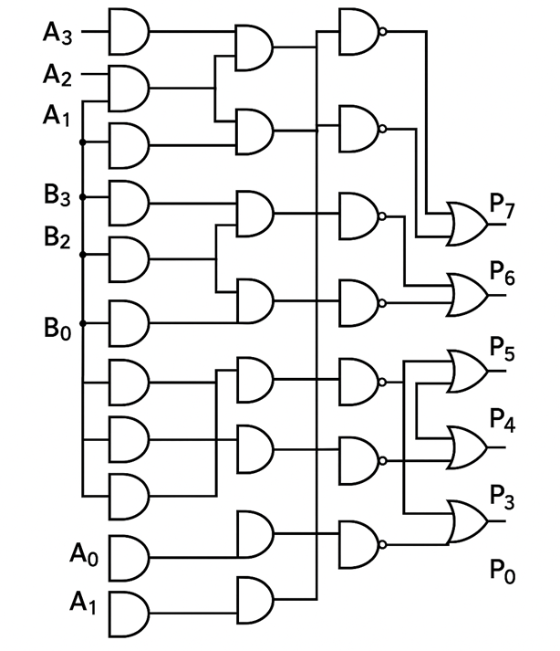

Multipliers
Binary Multiplication Fundamentals
Binary numbers can be multiplied using the same principles as decimal multiplication. The process involves generating partial products by multiplying the multiplicand by each bit of the multiplier, then summing these partial products to obtain the final result. This forms the foundation for all digital multiplier circuits used in modern processors, digital signal processors (DSPs), and specialized arithmetic units.
Basic Multiplication Process
Step 1: Start with the least significant bit of the multiplier
Step 2: Generate partial products by multiplying the multiplicand with each multiplier bit
Step 3: Shift each partial product one position to the left relative to the previous one
Step 4: Add all partial products to obtain the final result
Classification of Digital Multipliers
Digital multipliers can be categorized based on their implementation approach and optimization goals:
Array Multipliers:
- Simple structure using AND gates and adders arranged in a rectangular array
- Predictable timing and straightforward implementation
- Used in basic microcontrollers and educational applications
Tree Multipliers:
- More efficient designs like Wallace tree and Dadda multipliers that reduce delay
- Parallel processing of partial products for high-speed applications
- Commonly found in high-performance processors and graphics units
Sequential Multipliers:
- Booth's algorithm and modified Booth algorithm for signed multiplication
- Reduced hardware complexity with iterative processing
- Ideal for area-constrained implementations
Advanced Multipliers:
- Specialized designs with optimization techniques
- Custom logic configurations for specific applications
- Demonstrate various trade-offs in digital circuit design
2-Bit Binary Multiplier

A 2-bit multiplier demonstrates the fundamental concepts of digital multiplication. Consider two 2-bit binary numbers: multiplicand B₁B₀ and multiplier A₁A₀, producing a 4-bit product C₃C₂C₁C₀.
Circuit Implementation
The multiplication B₁B₀ × A₁A₀ generates two partial products:
First Partial Product: B₁B₀ × A₀
Second Partial Product: B₁B₀ × A₁ (shifted left by one position)
Since multiplication of two binary bits results in 1 only when both bits are 1, AND gates are used to generate the partial products. The partial products are then added using half-adder circuits.
Logic Equations
Partial Products:
- P₀₀ = B₀ · A₀
- P₀₁ = B₁ · A₀
- P₁₀ = B₀ · A₁
- P₁₁ = B₁ · A₁
Final Product:
- C₀ = P₀₀
- C₁ = Sum output of HA₁ (P₀₁ + P₁₀)
- C₂ = Sum output of HA₂ (Carry from HA₁ + P₁₁)
- C₃ = Carry output of HA₂
Key Features
- Uses 4 AND gates for partial product generation
- Employs 2 half-adders for partial product summation
- Simple and educational design
- Foundation for larger multiplier circuits
- Demonstrates basic multiplication principles

Circuit Diagram for 2-bit multiplier using half adders and AND gates
4-Bit Array Multiplier

The 4-bit array multiplier extends the 2-bit concept to handle larger numbers. It can multiply two 4-bit binary numbers (maximum value 15 each) to produce an 8-bit product (maximum value 255).
Circuit Architecture
Inputs: Multiplicand A₃A₂A₁A₀ and Multiplier B₃B₂B₁B₀
Output: 8-bit Product P₇P₆P₅P₄P₃P₂P₁P₀
The circuit generates 4 partial products, each requiring proper alignment and summation.
Partial Products Structure
- Row 0: A₃B₀, A₂B₀, A₁B₀, A₀B₀
- Row 1: A₃B₁, A₂B₁, A₁B₁, A₀B₁ (shifted left by 1)
- Row 2: A₃B₂, A₂B₂, A₁B₂, A₀B₂ (shifted left by 2)
- Row 3: A₃B₃, A₂B₃, A₁B₃, A₀B₃ (shifted left by 3)
Important Design Considerations
Carry Propagation: The carry outputs (Cout) from the first two 4-bit adders must be properly connected to the carry inputs (Cin) of the subsequent adders to ensure correct addition of all partial products.
Adder Selection: While 4-bit full adders can be used, implementing with individual single-bit adders (half-adders and full-adders) provides better understanding of the circuit operation and more efficient hardware utilization.
Logic Implementation
- 16 AND gates for partial product generation (4×4 matrix)
- Multiple adder stages for partial product summation
- Systematic carry propagation between adder stages
- Optimized critical path for timing performance
Applications
- Embedded processors: Basic arithmetic operations
- Digital signal processing: Convolution and filtering
- Microcontrollers: Mathematical computations
- FPGA implementations: Custom arithmetic units
Sequential Shift-and-Add Multiplier
The shift-and-add algorithm implements multiplication using a sequential approach, similar to manual binary multiplication. This method is particularly useful when hardware resources are limited or when implementing multiplication in software.
Algorithm Description
Initialization:
- Load multiplicand and multiplier into registers
- Clear the product accumulator
- Set bit counter to the multiplier width
Iterative Process:
- Examine LSB of multiplier
- If LSB = 1: Add multiplicand to partial product
- If LSB = 0: No addition required
- Shift multiplicand left by one position
- Shift multiplier right by one position
- Decrement bit counter
- Repeat until all bits are processed
Control Flow Structure
Start → Initialize Registers → Check Multiplier LSB → Conditional Add → Shift Operations → Counter Check → Result Output
Key Features
- Sequential processing: One bit per clock cycle
- Resource efficient: Requires only one adder
- Flexible implementation: Suitable for various bit widths
- Clear algorithm: Easy to understand and implement
- Software friendly: Can be implemented in microprocessors
Advantages and Disadvantages
Advantages:
- Minimal hardware requirements
- Scalable to any bit width
- Easy to control and debug
- Lower power consumption
Disadvantages:
- Slower than parallel methods
- Requires multiple clock cycles
- Not suitable for high-speed applications
- More complex control logic
Applications
- Microcontroller implementations: Resource-constrained systems
- Software multiplication: Processor algorithms
- Educational purposes: Understanding multiplication concepts
- Low-power designs: Battery-operated devices
Advanced Multiplier Architectures
4-Bit Advanced Multiplier
The 4-bit advanced multiplier builds upon the basic array multiplier concept while incorporating optimization techniques and additional logic gates for improved performance and educational value.

Key Features:
- Enhanced gate library: Utilizes NOT, XOR, and OR gates alongside basic AND gates
- Optimization opportunities: Students can explore different implementation strategies
- Signal inversion: NOT gates enable advanced logic optimizations
- Custom adder configurations: XOR and OR gates allow for alternative adder implementations
Design Principles:
- Partial product generation: Same 16 AND gates as array multiplier
- Flexible addition network: Multiple gate types enable various summation strategies
- Logic optimization: Students can implement area or speed optimizations
- Educational focus: Demonstrates impact of gate selection on circuit characteristics
Optimization Strategies:
- Gate substitution: Replace compound logic with simpler gate combinations
- Signal conditioning: Use NOT gates for active-low logic interfaces
- Custom carry logic: Implement specialized carry generation using XOR/OR gates
- Area-speed trade-offs: Balance between hardware complexity and performance
Wallace Tree Multiplier
Wallace tree multipliers represent a significant advancement in high-speed multiplication, utilizing a tree structure to minimize the critical path delay through parallel processing of partial products.

Algorithm Description:
The Wallace tree algorithm systematically reduces partial products using a series of compression stages:
Stage 1: Group partial products into sets of three
Stage 2: Use Full Adders (3:2 compressors) to reduce each group of three to two
Stage 3: Group remaining pairs with Half Adders (2:2 compressors)
Stage 4: Repeat until only two operands remain
Stage 5: Add final two operands with fast adder
Tree Structure Benefits:
- Parallel processing: Multiple partial products processed simultaneously
- Reduced delay: Logarithmic depth instead of linear accumulation
- Scalability: Efficient for large bit-width multiplications
- High throughput: Optimal for high-frequency applications
Implementation Details:
- 3:2 Compression: Full adders reduce three partial product bits to sum and carry
- 2:2 Compression: Half adders handle pairs of partial product bits
- Carry-save addition: Intermediate results maintain separate sum and carry
- Final addition: Fast carry-propagate adder completes the multiplication
Design Considerations:
- Tree depth: Determines critical path delay (typically log₁.₅(n) stages)
- Hardware complexity: More complex than array multipliers but faster
- Routing complexity: Irregular structure requires careful layout planning
- Power consumption: Higher due to increased switching activity
Booth's Algorithm
Booth's algorithm provides an efficient method for signed binary multiplication by examining groups of multiplier bits and performing conditional operations based on bit patterns.
Algorithm Principles:
Booth's algorithm is based on the observation that multiplication by a sequence of 1's can be replaced by subtraction and addition operations:
Bit Pattern Analysis:
- 00 or 11: No operation required
- 01: Add multiplicand to partial product
- 10: Subtract multiplicand from partial product
Sign Extension: Proper handling of negative numbers using two's complement arithmetic
Radix-2 Booth Algorithm:
- Initialize: Set partial product to 0, extend multiplier with additional bit (0)
- Examine: Look at current and previous multiplier bits
- Conditional Operation:
- 01: Add multiplicand
- 10: Subtract multiplicand
- 00/11: No operation
- Shift: Arithmetic right shift of partial product and multiplier
- Repeat: Continue for all multiplier bits
Modified Booth Algorithm (Radix-4):
The modified Booth algorithm examines two bits at a time, reducing the number of partial products by half:
Bit Pattern Operations:
- 000, 111: 0 × multiplicand
- 001, 010: +1 × multiplicand
- 011: +2 × multiplicand
- 100: -2 × multiplicand
- 101, 110: -1 × multiplicand
Advantages:
- Reduced partial products: Half the number compared to standard multiplication
- Signed arithmetic: Native support for negative numbers
- Regular structure: Suitable for parallel implementation
- Processor friendly: Widely used in commercial processors
Applications:
- Microprocessor ALUs: Standard implementation in modern CPUs
- DSP processors: Essential for signal processing applications
- Embedded systems: Efficient signed multiplication in resource-constrained environments
- FPGA implementations: Regular structure suitable for FPGA architectures
Design Considerations
Timing Analysis
- Critical Path: The longest delay path determines the maximum operating frequency
- Carry Propagation: Dominant factor in array multiplier timing
- Tree Depth: Key parameter in Wallace tree multiplier performance
Power Optimization
- Clock Gating: Disable unused circuit portions
- Voltage Scaling: Reduce supply voltage for lower power
- Architecture Selection: Choose appropriate multiplier type for power requirements
Area-Time Trade-offs
- Parallel vs. Sequential: Balance between speed and hardware cost
- Bit Width Considerations: Larger multipliers require exponentially more resources
- Application Requirements: Match multiplier design to system needs
Real-World Applications
Processor Arithmetic Logic Units (ALUs)
Modern microprocessors incorporate sophisticated multiplier units as core components of their ALUs. These multipliers handle:
- Integer multiplication: Basic arithmetic operations for software execution
- Address calculation: Memory addressing and pointer arithmetic
- Loop counters: Efficient iteration control in software loops
- Mathematical libraries: Foundation for complex mathematical functions
Digital Signal Processing (DSP)
DSP applications heavily rely on multiplication operations for:
- Convolution: Core operation in digital filtering and signal processing
- FFT algorithms: Fast Fourier Transform implementations for frequency analysis
- Image processing: Pixel manipulation, filtering, and enhancement operations
- Audio processing: Digital audio effects, compression, and synthesis
Graphics Processing Units (GPUs)
GPU architectures incorporate thousands of multiplier units for:
- 3D graphics rendering: Matrix transformations and geometric calculations
- Shader processing: Pixel and vertex shader arithmetic operations
- Machine learning: Neural network training and inference acceleration
- Parallel computing: High-throughput scientific and engineering computations
Cryptography and Security
Multipliers play crucial roles in cryptographic systems:
- RSA encryption: Large integer multiplication for public-key cryptography
- Elliptic curve cryptography: Field multiplication operations
- Hash functions: Cryptographic hash computation algorithms
- Digital signatures: Authentication and integrity verification systems
Machine Learning and AI
Modern AI accelerators depend on efficient multiplication:
- Neural network training: Backpropagation and weight update calculations
- Matrix operations: Core linear algebra operations in deep learning
- Inference engines: Real-time AI inference in edge devices
- Tensor processing: High-dimensional array operations in AI frameworks
Communication Systems
Digital communication relies on multipliers for:
- Modulation/Demodulation: Signal processing in wireless communication
- Error correction: Reed-Solomon and other error correction algorithms
- Channel coding: Forward error correction and signal enhancement
- Protocol processing: Network packet processing and routing calculations